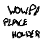

Heyy so this page is kinda a little weird embarassing n whateverr
It's somewhat personal and overly sentimental so that's your warning if you do wanna snoop through my stuff!
But to sum it up this is kind of my memorial for past or distant friends, to express my love for them and thank them for being in my life.
Most have probably forgotten me, or may even dislike me. But they all have left bits of themself with me that build up who I am today

You're a joy to be around, and you helped me be more kind.
We weren't around much, but you treated me highly regardless. Your tutorials helped me a lot, and thank you so much for gifting me L4D2, you introduced me to how lovely valve games are.
Honestly, you came from nowhere and, I never truly knew who you were. Regardless, you always brightened my day when we interacted, and you sparked deep thoughts in me.
You've been a great friend to me, bringing me from friend group to friend group, you always gave me love and brought me around those who would too. I look up to you and your optimism, your kindness and will to stick around is something to be proud of, thank you.
Despite being mean to me at first, you grew on me, and I quite enjoyed the friendship we had thereon after
Maybe a little too annoying and childish for my taste, but nontheless I did enjoy hanging out with you.
The totally certified therapist... you are meaanyy but cool! Thank you for your amazing community.
You'd always match my energy, but keep me grounded and know when to get real. Thank you for being fooling around, and for comforting me.
It may have been a bit weird, and I have my grievances about what you do, but you always knew how to cheer me up. Thank you for being a place of love, for being someone I could talk to.
You're annoyingly cute, and honestly I'm jelous of it. I look up to you and your positivity, and you always made me feel loved.
We probably were mostly acquaintances, but I enjoyed the places we built together, and you always had something interesting to do.
You clicked with me pretty well, I always enjoyed being with you and bonding over action games. Sorry I never finished building blackrock.
You'd always check on me and try to include me, we didn't have much, but thank you for keeping me in mind.
You took the time to explore my interests with me, even if it was boring to you, it meant a lot to me, thank you.
Annoyingly comforting, really. I don't understand how you always were there for me, but I don't think I'll ever meet someone who pesters me as much as you did.
You brought me into a great friendgroup, and introduced me to another that branched off into me meeting all the valuable people in my life. I'm sorry for how I distanced myself, byt thank you for your kindness, and for being the seed that gave me the life I couldn't live without now.
You felt like a sister to me, I loved how open we were how we could fight without worry.
Your shrine might've cursed me with never ending lesbian friends, but I;m not complaning. Always so nice and open, you lept me grounded.
Putting aside the fact you abuse me physically, you were always cool to hang out with, and you helped me through a lot.
You were a great period of my life, I'm sorry things went the way they did. You always made me feel so loved, and you've left bits of personality with me to this day.
Despite all the changing you've stuck around, always offering your joy to me and helping hold me together.
While we didn't see each other often, you'd always match my energy and I loved how open we could talk.
A freaking cinnamon roll you are, you're so kind and your joy always bled into me.
We may have only really been friends over a few games, but I appreciate how you and your whole group welcomed me with open arms, how we'd all bond over tireless hours of grinding.
Fun and calming to be with, I felt like I could slow down when I talk to you. You probably sparked my interest in voice.
Few words were exchanged, but playing with you was always fun.
Strange to be around, but always enjoyable.
Welcoming me into your community started a lot for me. Our conversations ran deep and I loved our connection.
While mostly a friend of a friend, you stuck around and were real to me. Thank you for all those deep talks and for staying around.
Probably my first close school friend, you made me happy to be a gamer and share my interests. I probably could've treated you a lot better, my apologies.
Always fun to be around, you knew how to keep things funny.
Always gave me something cool to get interested in, and helped organize things.
Emery
You carried me through the later years of school, roughing around and just living day to day with you. You always brought a smile to everyones face.
Someone I could be real with and fully open to, you always gave me a safe spot for my mind.
I loved how you never held back and treated everyone fair, in my case, it meant I could we close and rough.
You always had an interesting perspective on things I could listen in on and ponder to.
We didn't talk much, but you always were a great friend of a friend
Your community was a home for me, the love you and them gave me made me addicted to talking to strangers online.
You'd always cheer things up with your humor and our... beeboys...
Possibly too nice, indecisive, and leading for your own good, but you always tried your best.
You always had a positive take to things, and your drawings really made me want to get into art.
You're a spazz I never saw much, but I always felt like I could connect with you when I did.
You might revoke your past self, but regardless I love and am thankful for the time we had together back then. Your kindness and closeness made me feel very loved.
You're awake my love for building and I loved the countless hours I sunk in just messing around with you.
You helped keep me engaged in building with all your messing around, it was fun to hang out.
Meeting you was a lucky shot, and while sparse I've enjoyed every time we play together.
YOU ARE TERSE but cool and I enjoy playing with you.
Messing around like an idiot was always fun with you. you made hours go by on the fly and I always had a place to be when I was down.
Honestly we've only talked once and it's weird to value you so much, but that talk meant so much to me. I hope in the future we may re connect and turn it in to the a norm.
You're weird girl, but I appreciate when we can be weird or serious.
You kinda felt like a old guy when I played with you, but in a cool way.
I can't agree on the fart smelling part, but you being so welcoming to me was nice.
Your evil warden griefing and evil clothing shop left a little whimsy in me.
Lam
Despite our distance, our seperation. We'll always share the same moon.